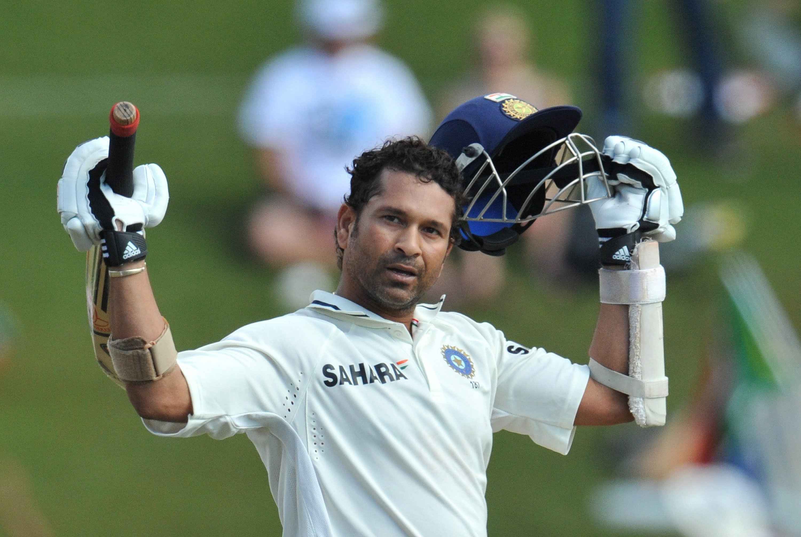

Sachin Ramesh Tendulkar

Sachin Ramesh Tendulkar (born 24 April 1973) is an Indian former
international cricketer who captained the Indian national team.
He is regarded as one of the greatest batsmen in the history of cricket.
He is the all-time highest run-scorer in both ODI and Test cricket
with more than 18000 runs and 15000 runs respectively in total. He also
holds the record for receiving the most man-of-the-match
awards in
international cricket. Known for his large fanbase and described by
ESPNcricinfo as 'the most worshipped player in the world'
,Tendulkar
is sometimes referred to as "The God of Cricket" in India.
Stats Of Legend
| Format |
M |
Inn |
NO |
Runs |
HS |
Avg |
BF |
SR |
100 |
200 |
50 |
4s |
6s |
| Test |
200 |
329 |
33 |
15921 |
248 |
53.79 |
29437 |
54.08 |
51 |
6 |
68 |
2058 |
69 |
| ODI |
463 |
452 |
41 |
18426 |
200 |
44.83 |
21367 |
86.24 |
49 |
1 |
96 |
2016 |
195 |
| T20I |
1 |
1 |
0 |
10 |
10 |
10.0 |
12 |
83.33 |
0 |
0 |
0 |
2 |
0 |
| IPL |
78 |
78 |
9 |
2334 |
100 |
33.83 |
1948 |
119.82 |
1 |
0 |
13 |
295 |
29 |